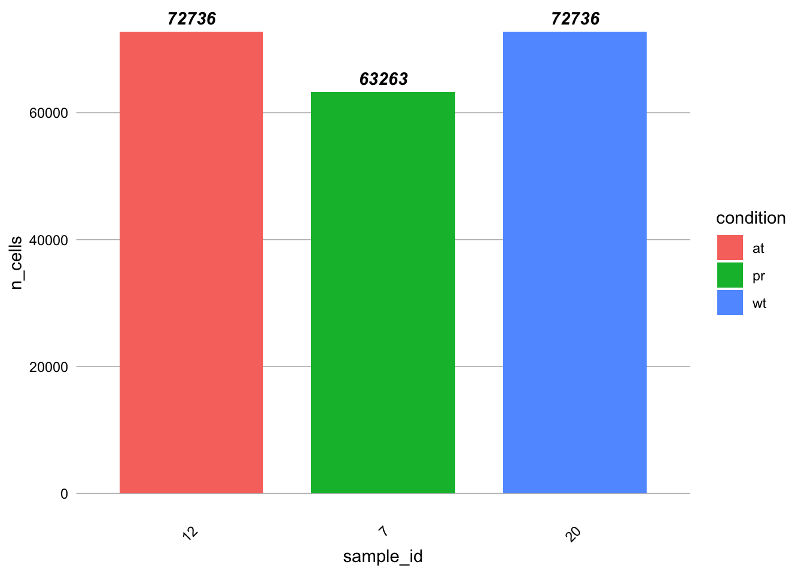
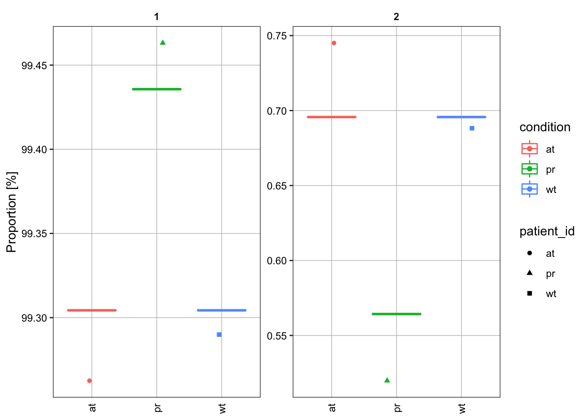
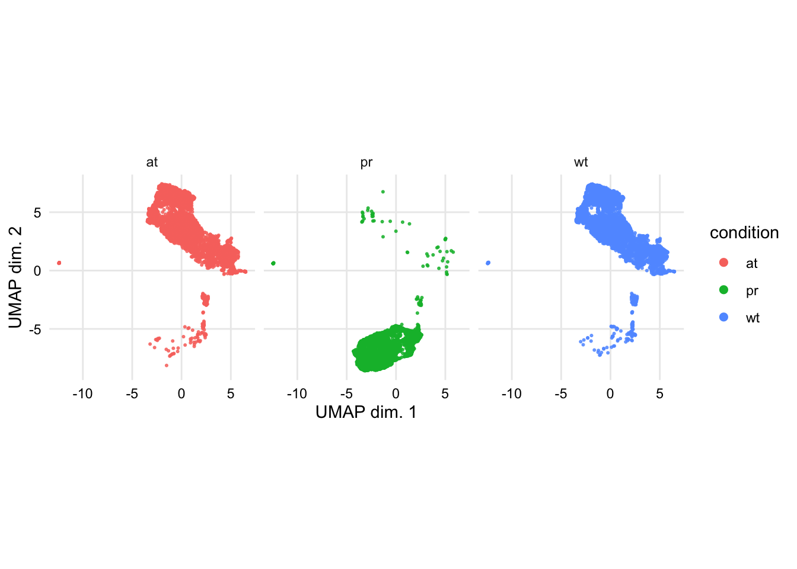

FlowCore analysis
Input data
Input the data from design file into a SingleCellExperiment class object using the wrapper function prepData from CATALYST.
# design_<dir>_<sample>.csv
design_files <- list.files(pattern = "design_")
for (i in design_files){
x <- strsplit(i, "_")
condition <- x[[1]][2]
value <- x[[1]][3]
value <- gsub(".csv","", value)
dir_files <- paste0("input/", value)
dir.create(file.path("input"), showWarnings = FALSE)
dir.create(file.path(dir_files), showWarnings = FALSE)
md <- read.csv(i)
file_names <- as.vector(md$file_name)
linked_files <- gsub("./","", file_names)
linked_files <- paste0(getwd(), "/" ,linked_files)
output_dir <- paste0(getwd(), "/", dir_files, "/")
for (y in linked_files){
file.symlink(y, output_dir)
}
fcs_files <- list.files(path = output_dir, pattern = ".fcs$", full.names = T)
md$file_name <- fcs_files
fs <- read.flowSet(fcs_files, transformation = FALSE, truncate_max_range = FALSE)
panel <- read.csv("metals_meta_expressed.csv", stringsAsFactors = T)
md$condition <- as.factor(md$condition)
md$sample_id <- as.factor(md$sample_id)
sce <- prepData(fs, panel, md)
# Define a downsampling ceiling
sampling.ceiling <- as.integer(config$downsample)
# Being reproducible is a plus
set.seed(0)
## BUILD A DOWNSAMPLED FLOWSET
fs.ds <- fsApply(fs, function(ff) {
idx <- sample.int(nrow(ff), min(sampling.ceiling, nrow(ff)))
ff[idx,] # alt. ff[order(idx),]
})
fs.ds
sce.downsample <- prepData(fs.ds, panel, md)
assign(paste("sce", i, sep = "."), sce)
assign(paste("sce.downsample", i, sep = "."), sce.downsample)
}Plot counts
design_amo_amo.csv

Heatmap of (scaled) median marker expressions
plotExprHeatmap will show a heatmap on median marker intensities with hierarchically clustered rows (samples) and columns (markers). This plot should give an idea of which markers will drive sample clustering, and how similiar samples are in their expression profile. We specify bin_anno = TRUE to display expression values inside each bin, and row_anno = TRUE to include row annotations for each factor in metadata(daf).
design_amo_amo.csv

Cluster cells
Cluster cells based on the use_for_clustering in the panel data table.
design_amo_amo.csv
Delta area plot
The delta area represents the amount of extra cluster stability gained when clustering into k groups as compared to k-1 groups. It can be expected that high stability of clusters can be reached when clustering into the number of groups that best fits the data. The “natural” number of clusters present in the data should thus corresponds to the value of k where there is no longer a considerable increase in stability (pleateau onset). For more details, the user can refer to the original description of the consensus clustering method (Monti et al. 2003).
design_amo_amo.csv
Median marker-expressions by cluster
We can facet the above plot by antigen in order to compare marker expressions calculated over all cells across conditions
design_amo_amo.csv
Marker-densities by cluster
Distributions of marker intensities (arcsinh-transformed) across cell populations of interest can be plotted with plotClusterExprs. We specify features = “type” (equivalent to type_markers(sce)), to include type-markers only. Here, blue densities are calculated over all cells and serve as a reference.
design_amo_amo.csv
## Picking joint bandwidth of 0.0222## Picking joint bandwidth of 0.241## Picking joint bandwidth of 0.148Heatmap
Clusterings and metaclusters maybe be viewing with the plotClusterHeatmap. In its 1st panel, the function will display median (arcsinh-transformed and optionally scaled) cell-type marker expressions (across all samples). Depending on argument hm2, the 2nd panel will vary as follows:
“abundances”: cluster frequencies by sample; “state_markers”: median cell state marker expressions across clusters (analogous to the left-hand side heatmap); a character string/vector corresponding to one/multiple marker(s): median marker expressions by sample. Argument scale (default TRUE) specifies whether scaled values should be plotted. These correspond to arcsinh-transformed expression values scaled between 0 and 1 using low (1%) and high (99%) percentiles as boundaries. Note that, in any case, hierarchical clustering is performed on the unscaled data. While it is only used here for visualization, this additional transformation of the arcsinh-transformed data can sometimes give a better representation of relative differences in marker expression between cell populations.
design_amo_amo.csv
 [[1]]
[[1]]
Relative population abundances
Relative population abundances for any clustering of interest can be plotted with plotAbundances. Argument by will specify whether to plot proportions for each sample or cluster. If by = “sample_id”, the function displays each sample’s cell type composition, and the size of a given stripe reflects the proportion of the corresponding cell type the given sample. Argument group then specifies the facetting. If by = “cluster_id”, argument group then specifies the grouping and color coding.
design_amo_amo.csv
design_amo_amo.csv

Dimensionality reduction
Multi-dimensional reduction
for (i in design_files){
sce <- get(gsub("SAMPLE_FILE",i , "sce.SAMPLE_FILE"))
set.seed(1601)
cat("### ",i,"\n")
p <- CATALYST::plotMDS(sce, color_by = "condition")
print(p)
cat('\n\n')
}## ### design_amo_amo.csvUMAP
design_amo_amo.csv

TSNE
Differential analysis
To be completed when we have full data and not just test data
#design <- createDesignMatrix(ei(sce), cols_design = "condition")
#contrast <- createContrast(c(0, 1))